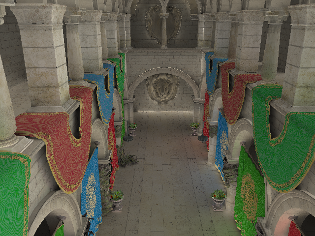

|  |
|
Axis-Aligned Filtering for Interactive Physically-Based Diffuse Indirect Lighting. Soham Mehta, Brandon Wang, Ravi Ramamoorthi and Fredo Durand.
To be presented at Siggraph 2013, Anaheim.
For more details see the Project Page |
| |
|
|
 |
|
Axis-Aligned Filtering for Interactive Sampled Soft Shadows. Soham Mehta, Brandon Wang, and Ravi Ramamoorthi. ACM Trans. Graph., 31(6):163:1–163:10, Nov 2012.
Presented at Siggraph Asia 2012, Singapore.
For more details see the Project Page |
| |
|
|
 |
|
Analytic Tangent Irradiance Environment Maps for Anisotropic Surfaces. Soham Mehta, Ravi Ramamoorthi, Mark Meyer, and Christophe Hery. Computer Graphics Forum, 31(4):1501–1508, June 2012.
Presented at Eurographics Symposium on Rendering 2012, Paris.
For more details see the Project Page |
Experimental Analysis of Perception-based Compression of Haptic Data
A tele-operation system allows people to manipulate objects in remote, inaccessible, dangerous, or scaled environments. The transmission resources for typical communication networks used in tele-operation scenarios are, however, limited. Data reduction methods, as well as transmission protocols, are therefore of high interest. I implemented a Multi-player game-like SVE, where the physical environment consisted of a cloth and a ball which interacted under gravity and player input. The compression was done exploiting Weber'r law of perception.
Here is the report. |
|
Under-Graduate Thesis- II
IIT-Bombay
Advisor:Prof. Subhasis Chaudhuri
Jan-Apr 2011 |
Learning-based Gesture Recognition
An extensive literature survey was conducted and various existing methods in hand-gesture recognition were studied. Methods within the learning-based category were evaluated, and, among the learning based methods, it was decided to use Hidden Markov Models to model and recognize gestures based on quantization of hand-trajectory (similar to this paper). The implementation was done in C++ using OpenCV.
Here is the report. |
|
Under-Graduate Thesis - I
IIT-Bombay
Advisor: Prof. Subhasis Chaudhuri
July-Dec 2010
|
Spatio-Temporal Gait Analysis with gyroscopic angular rate sensors
Gait Analysis - analysis of human walking - is finding increasing applications in orthopaedics and even sports. This project implemented gait analysis algorithms, in C++, previously designed at the Laboratory of Movement Analysis and Measurement (LMAM). We used 2-4 gyroscopes attached to shanks and thighs, and the resulting angular velocity data was processed to compute spatial and temporal gait paramters. A simple GUI was also designed to integrate this processing in an easy-to-use interface for actual users such as clinicians.
Here is the presentation. |
|
Summer Internship at
EPFL, Switzerland
Advisor: Prof. Kamiar Aminian
May-July 2010 |
Introduction to the Lattice Boltzmann Method
This was a talk presented at the 8th Indo German Winter Academy under the course 'High Performance Computing'. Tutored by Prof. Rude, University of Erlangen. It was attended by about 30 German and Indian students and Professors.
Here is the presentation. |
|
IIT-Roorkee, India.
Dec 2009 |
Simulation of Wireless P2P Networks
P2P streaming is gaining increasing popularity, and so is wireless Internet. Simulators are needed to evaluate and test protocols and mathematical models over dynamic, large-scale p2p networks. The simulator developed in this project focused on evaluating and improving performance of live streaming in p2p systems under wireless channel-fading. It was Java coded using the Peersim API. A 2D Markov chain modelled the channel capacity, though, the simulator provides flexibilty to use other models as well. In the implemeted fluid streaming case (Kumar-Ross-Liu) reward is the performance criterion. In a more realistic model with indexed data and search-upload-download scheme, average misses per time slot is the criterion of performance. A GUI was also developed on this simulator for easy use.
Here is the presentation for this project. |
|
Summer Internship at
Chinese University of Hong Kong
Advisor: Prof. Jianwei Huang
May-July 2009. |
Haptic Interfacing in Multi-player Gaming
This project was aimed at developing a network architecture for multi-player gaming provided with haptic-interfacing, optimised for the data distribution scheduling required with haptics to ensure bounded delays. In the first phase, TCP was used, while in the second phase, UDP. The latter using multicasting was found to perform best for a large player number and churn, ie. random entry and exit of players from the game's shared virtual environment (SVE). A simple yet effective and realistic algorithm for simulation cloth and its interaction with a rigid body was also implemented. The haptic device used was Novint's Falcon, interfaced using the open source H3D API. OpenGL was used to render the graphics. |
|
Undergraduate Research Award (URA) 01
IIT-Bombay
Advisor: Prof. Subhasis Chaudhuri
Oct 2008 - Aug 2009 |
Power Sub System in Micro Satellite
The IIT-B Student satellite Project was started in June 2007 when there were few such projects going on in the world. The idea was conceived by students of the Aerospace Department; the group was about 30 students from across departments. The satellite is commisioned to be launched by the Indian Space Research Organisation (ISRO) soon.
The power sub-system consists of the solar panels, Li-ion batteries and power distribution circuitry. My work has been in the areas of component selection and PCB layout/design under electromagnetic interference(EMI) minimisation. I have also simulated the power incidence and absorption processes to evaluate efficiency. |
|
Mentored by Aerospace Department, IIT-B
Member from Jan 2008 to Jan 2009 |